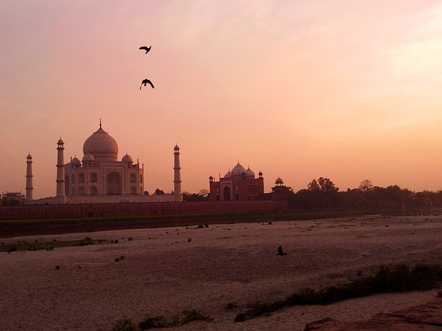
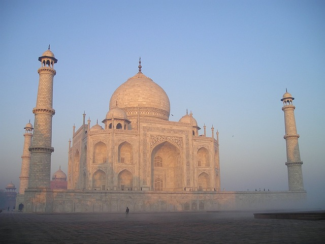

LE TAJ MAHAL
C'est quoi le Taj Mahal ? Immense mausolée funéraire de marbre blanc édifiée entre 1631 et 1648 à Agra sur l'ordre de l'empereur moghol Shah Jahan pour perpétuer le souvenir de son épouse favorite, le Taj Mahal, joyau le plus parfait de l'art musulman en Inde, est l'un des chefs-d'œuvre universellement admirés du patrimoine de l'humanité. Le Taj Mahal (en devanagari ताजमहल, en persan تاج محل, qui signifie « la couronne du palais » — mais ce nom peut aussi être vu comme une corruption de Mumtaz Mahal) est situé à Agra, au bord de la rivière Yamuna, dans l'État de l'Uttar Pradesh, en Inde. C'est un mausolée de marbre blanc construit par l'empereur moghol musulman Shâh Jahân en mémoire de son épouse Arjumand Bânu Begam3, aussi connue sous le nom de Mumtaz Mahal, qui signifie en persan « lumière du palais ». Celle-ci meurt le 17 juin 1631 en donnant naissance à leur quatorzième enfant, alors qu'elle accompagnait son mari pendant une campagne militaire. Elle trouve une première sépulture sur place dans le jardin Zainabad à Burhanpur. La construction du mausolée commence en 1631 et s'achève dans sa plus grande partie en 16484. Son époux, mort le 31 janvier 1666, est inhumé auprès d'elle.

En face de la mosquée, à l'Est du mausolée et pour des raisons de symétrie, un bâtiment identique se tient debout. Cependant, ce n'est pas une mosquée, mais le pavillon des invités, car il n'est pas dirigé vers La Mecque. Il servait de lieu pour accueillir les invités lors des anniversaires de la mort de Mumtaz Mahal.
Sa construction commence en 1632, mais la date exacte de la fin des travaux demeure incertaine. Selon le chroniqueur officiel de Shâh Jahân, Abdul Hamid Lahori, le Taj Mahal est achevé à la fin de 1643 ou au début de 1644. Mais une inscription dans l'entrée principale indique que la construction s'est achevée en 1648. L'État de l'Uttar Pradesh, qui a célébré officiellement le 350e anniversaire de l'édifice en 2004, affirme quant à lui que les travaux se sont achevés en 1654. Le chercheur Andrew Petersen, lui, mentionne prudemment que « les travaux ont duré plus de vingt ans ». Le chantier aurait mobilisé 22 000 esclaves10 ainsi que des maîtres artisans venus d'Europe et d'Asie centrale. On pense en général que l'architecte principal fut Ustad Ahmad Lahauri,de Lahorek . En 2019, le monument a attiré plus de 6 millions et demi de touristes, dont plus de 800 000 étrangers. Un système de prix est mis en place avec un tarif d'entrée faible pour les Indiens et un prix vingt-cinq fois plus élevé pour les étrangers. Les touristes visitent principalement le site lors des mois plus frais d'octobre, novembre et décembre. En octobre 2000, le prix est triplé afin de réduire la surfréquentation touristique.
